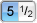

Page Index
About the Toolbar
The Toolbar Palette contains buttons that execute the most common operations you'll want to perform on tones, chords, and scales. Click on a button or use a keyboard shortcut to enact the command. The keyboard shortcuts for each button are shown next to its name below, and also in the balloon help. Some buttons make use of modifier keys, which are noted.
-
- Use the command to toggle the Toolbar.
| There is built-in help in FretPet! Hover the mouse pointer over any control until a tooltip appears. You can then hold down the Command Key (⌘) to see additional details. |
Toolbar Buttons
- Clear
-
Depending on which modifier keys are pressed, this button will clear the tones of the Current Chord, the sequence of the Current Chord, or both.
- This corresponds to the commands.
- ⌥ click to clear the chord's sequence.
- ⌘ click to clear both the tones and the sequence.
- Triad
-
Add three notes to the chord beginning with the Scale Note. The notes are added in Third intervals. (For example, if you select a D triad in the C scale you get a Dm chord with the tones D - F - A.) FretPet plays the triad as an arpeggio.
- ⇧ click clears the chord before adding the triad.
- ⌥ click subtracts the triad from the chord.
- Scale
-
Add the entire Current Scale to the chord. FretPet will play a linear progression of all the notes in the resulting chord, beginning with the root of the Current Key. This is useful when you want to see how a scale is laid out on the fretboard.
- ⇧ click clears the chord before adding the scale.
- ⌥ click subtracts the scale from the chord.
- Transform <T>
-
Transpose and Harmonize the Current Chord to a new key and scale function that you click on.
When you click the Transform Button the pointer changes into an arrow with a key alongside it.
You can then click a tone in the Scale Palette, Guitar Palette, Circle Palette, or Keyboard Palette to transform the Current Chord. In the Scale Palette the chord will be appropriately transposed and harmonized. In the other palettes the chord is harmonized but not transposed.
Note that you can hold down the mouse button (in most places) to continuously transform the chord. Useful when you want to try various transformations without repeatedly clicking the Transform button.
- ⌥ click for Transform Once, which does one transformation then stops.
- You can also use the command.
- Hear
-
Click Hear to listen to the Current Chord. This button acts differently depending on the status of the Current Chord. There are 3 possibilities:
- Click to Strum Downward from low notes to high. This is the same as .
- ⌥ click to Strum Upward from high notes to low. This is the same as .
- ⇧ click to Strike the chord. This is the same as .
- In all cases if the Fret Bracket is disabled an arpeggio will play instead.

Hear interrupts anything that is currently playing. - Stop <esc>
-
Click here to stop any sequences that are playing.
- You can also use the command.
-
 Play <P>
Play <P>
-
Start playing the document. If more than one chord is selected then play the selected range. Once play begins you can move around and change the selection without affecting which chords will play. The behavior of Play is affected by the settings of the next three buttons.
- You can also use the command.
-
 Loop <L>
Loop <L>
-
When this button is turned on the play range will repeat indefinitely until you press Stop or until you turn looping off and the sequence reaches its end.
- You can also use the command.
-
 Follow View
<F>
Follow View
<F>
-
This button works in conjunction with the Edit Mode button to change the way the interface behaves while a song is playing. See the chart below for a synopsis of the way Follow View and Edit Mode affect Play behavior.
When Follow View is enabled the Document Cursor continuously moves to the currently playing chord. In this mode you aren't allowed to interact with the sequencer. (Unless Edit Mode is enabled. See below.)
- You can also use the command.
-
 Edit Mode <E>
Edit Mode <E>
-
This button gives you complete control over the Document Cursor during playback. With Edit Mode enabled playback is limited to the selected range of chords. You gain complete control over the playback of your song, and you can make any changes you want.
- You can also use the command.
Effects of Follow View + Edit Mode on Play Behavior
- Play begins with the selected range.
- You can move the Document Cursor.
- You can make selections.

- Play begins with the selected range.
- As Play begins the selection is turned off.
- The Document Cursor advances automatically.
- Interactivity in the Document is disabled.
- Play begins with the selected range.
- You control the playback location.
- You control the playback range.
- Play begins with the Current Chord.
- You control the playback location.
- Selections are disabled during play.
- Solo < ' >
-
Enable solo mode to hear a single Part isolated from the rest. With Solo Mode enabled the current part number will appear in red and it will blink during Play. Use Solo Mode to examine the Demo Sequences. After playing with Solo Mode you'll appreciate how much of a difference even a little harmony makes!
(The button image is meant to be a soloist.)
- You can also use the command.
-  Tone Order
-
FretPet can display tones and keys in two different orders. In 5ths Order tones are arranged according to harmonic consonance, so each tone is a perfect Fifth from its neighbor. In Halfsteps Order tones are arranged chromatically, so each tone is a halfstep away from its neighbor. This setting affects the Chord Palette, the Scale Palette, the Circle Palette, and the Document window.
- Roman Notation
-
Chord Tones and Chord Names can appear in two different forms. Normally you'll view tones as letter names. Sometimes it's useful to see Chord Tones and Chord Names in the context of the key. To do this enable Roman Notation. This setting affects the Chord Palette, the Circle Palette, and the Document window.
-
 Add Chord <A>
Add Chord <A>
-
Insert the Current Chord into the document. If no document is open then one will be created for you. Note that for a chord stored in a document this button effectively duplicates the chord.
- You can also use the command.